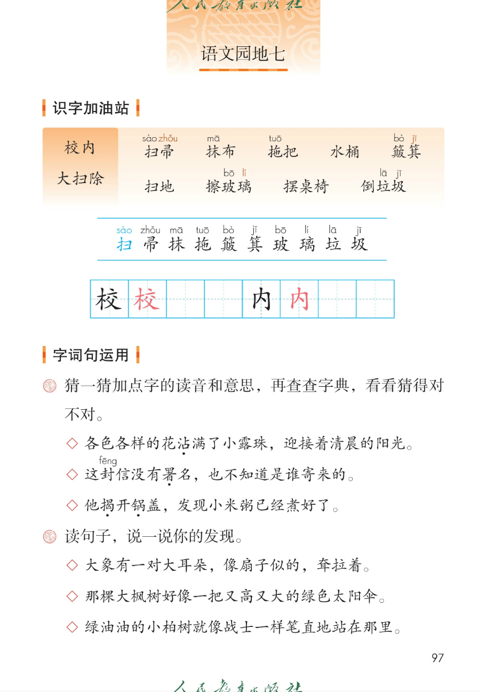
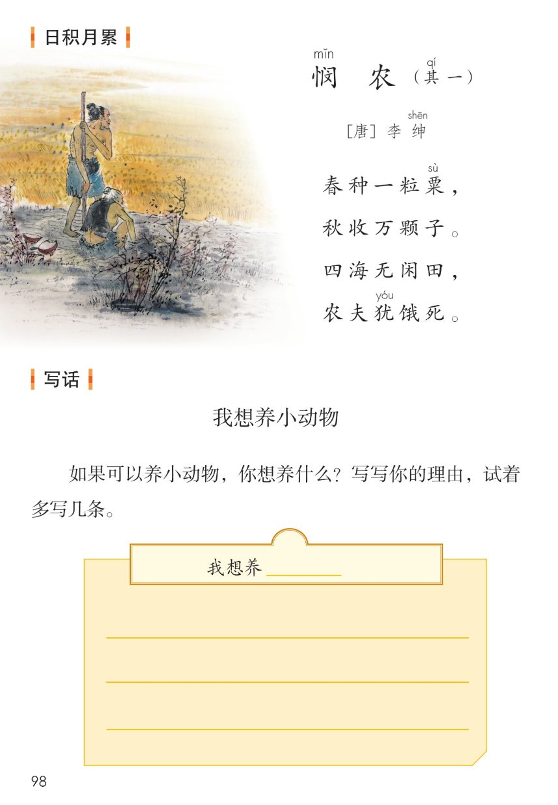
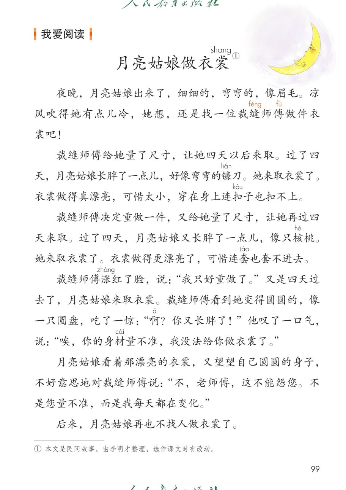

×
🔊 手机听不到声音怎么办？
① 先把手机
媒体音量调大 ，确认没开静音、没连蓝牙耳机；在微信里打开的，点右上角「⋯ → 用浏览器打开」。
② 还是没声音？到应用商店免费下载
Microsoft Edge 浏览器 （它自带朗读发声），用它打开本页面就能出声。
③ 换了 Edge 仍然没声音，说明这部手机的
硬件/系统不支持 网页朗读（多为老旧机型）；近几年买的新手机一般都能正常播放。
→ 打开声音自检
统编版 · 二年级下册 · 第七单元
第七单元 · 阅读 · 改变的故事
单元综合课件：语文园地七 · 写话 · 日积月累 · 我爱阅读
大扫除词语 9 个
会认 10 字
会写 2 字
悯农（其一）
闯关 8 题
这个单元讲了四个改变自己的故事： 大象的耳朵、蜘蛛开店、青蛙卖泥塘、小毛虫。
语文园地七把大扫除的词语、猜字音字义的方法、比喻句、《悯农》和《月亮姑娘做衣裳》 收一收、用一用。点一下任一卡片或句子，就能听。
课本第 97 页
点词听读音，点蓝线行听全行
课件引导： 下面两组词语——第一组是校内 大扫除用到的清洁工具 ，第二组是大扫除时的清洁活动 。读一读，认一认带拼音的字。
🧹 校内 · 清洁工具
扫sào 帚zhǒu 抹mā 布拖tuō 把水桶
簸bò 箕jī
扫sào 帚zhǒu 抹mā 拖tuō 簸bò 箕jī 玻bō 璃lí 垃lā 圾jī
📌 注音按课本照录：蓝线行 10 个字全部标音 ；「水桶」的桶、「扫地」的扫课本这一组未标音，不另加注。
📌 多音字「扫」 ：扫帚的扫读 sào ，扫地、扫雪的扫读 sǎo ——课本蓝线行标的是 sào。
课本第 97 页两条蓝线之间那一行，按课本顺序
田字格：校 内（黑色是范字，红色是描红）
课本第 97 页
课本第 97 页
题目（课本原文）： 猜一猜加点字的读音和意思 ，再查查字典，看看猜得对不对。
◇ 各色各样的花沾zhān
◇ 这封信没有署shǔ
◇ 他揭jiē
📌 猜读小妙招（课件补的参考 ）：沾——三点水旁，和水的意思有关；署——联系「不知道是谁寄来的」，是签名的意思；揭——提手旁，和手的动作有关。猜完记得查字典验证。
课本第 97 页
题目（课本原文）： 读句子，说一说你的发现。
◇ 大象有一对大耳朵 扇子
◇ 那棵大枫树 绿色太阳伞
◇ 绿油油的小柏树 战士
📌 三句话都是比喻句 ：像……似的、好像……、就像……一样，把事物的样子写得生动形象。第一句出自本单元课文《大象的耳朵》。这是课件补的发现参考 ，你的发现可以不一样。
课本第 98 页
理由试着多写几条
题目（课本原文）： 如果可以养小动物，你想养什么？写写你的理由，试着多写几条 。
1
想养什么
小狗、小猫、小兔子……选你最喜欢的一种
2
理由从哪想
外形——长什么样；习性——爱吃什么、爱做什么；性格——温顺、忠诚
📌 三个思路卡是课件补的写作参考 。示例：我想养一只小狗——小狗很可爱，毛茸茸的；它很忠诚，能帮我们看家；它跟人亲近，可以陪我玩。
课本第 98 页
点一句读一句
日积月累 · 悯mǐn 农（其qí 一）
[唐] 李绅shēn
诗意： 春天种下一粒种子，秋天就能收获很多粮食。天下没有一块闲置的田，可仍然有农夫饿死。诗人用「春种」到「秋收」写出农民一年的辛勤，结尾写出不公平，表达对劳动人民的同情 。
📌 注音按课本逐处照录：悯 mǐn、其 qí、绅 shēn、粟 sù、犹 yóu 五处；其余字课本未标音，不另加注。
🎯 背诵闯关（三步）
🔊 四句连起来读
第一步： 跟读，一句一句跟着读。第二步： 看提示背，只看每句的第一个字。第三步： 合上书背一遍，再对照课本。
裳shang 》
课本第 99 页
点一段读一段，注音按课本随文照录
读前想一想： 月亮姑娘找裁缝师傅 做衣裳，做了好几次，为什么一次也穿不上？读一读，注意她身子 的变化。
裁缝师傅做了几次衣裳？为什么都没穿上？
💡 三次都没穿上： 第一次像镰刀 ，太小扣不上；第二次像核桃 ，连套也套不进去；第三次像圆盘 ，量不准没法再做——因为月亮姑娘每天都在变化 。
和本单元连起来看： 人家是人家，我是我（大象的耳朵）→ 勤动脑、会变通（蜘蛛开店）→ 劳动创造美好（青蛙卖泥塘）→ 万事万物都有自己的规律（小毛虫）→ 看事物不能用固定的眼光 （月亮姑娘做衣裳）。
词语积累（取自故事）
衣裳 ——衣服裁缝 ——做衣服的人可惜 ——令人惋惜身材 ——身体的高矮胖瘦
这个故事告诉我们
月亮每隔几天就变一个样子：眉毛→镰刀→核桃→圆盘 。
月亮姑娘每天都在变化 ，衣裳当然穿不上。
看事物不能用固定的眼光 。
点选项就判对错，答完自动算分
已经答 0 题，答对 0 题。
点图放大

第 97 页 · 识字加油站 · 字词句运用

第 98 页 · 日积月累 · 写话

第 99 页 · 我爱阅读《月亮姑娘做衣裳》